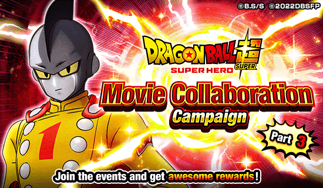
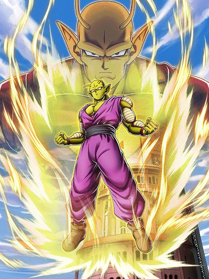
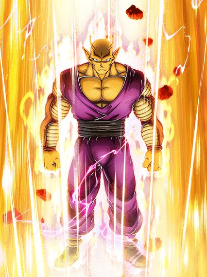
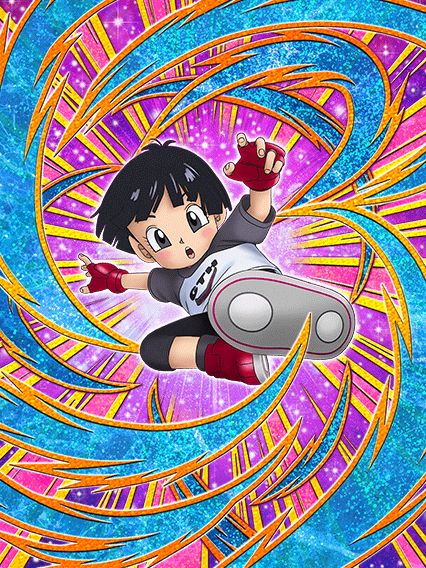
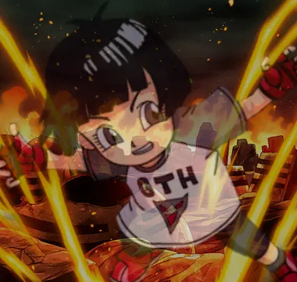
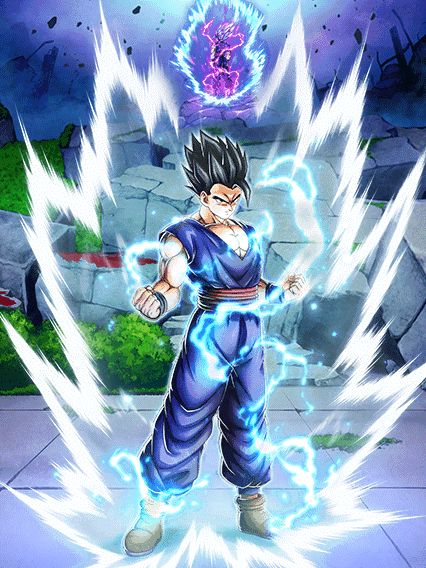
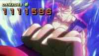
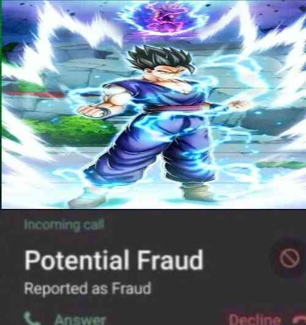
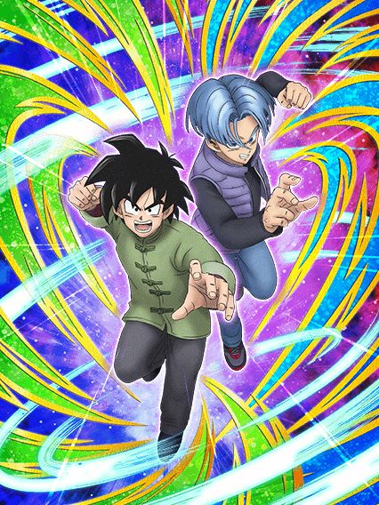

A parte final do quebra-cabeça.
Eles buildaram hype desde o final do aniversário pra esse momento, lançaram o evento mais difícil do jogo, e ainda fizeram os gammas cards incríveis, eles não podem errar agora né?
Bom…

O mestre da grelha.
O Piccolo é o indiscutível melhor personagem do jogo, melhor que os LRs do aniversário, melhor que o Vegeta e Trunks, o cara é simplesmente uma lenda
Pra começar, ele é líder pra nova categoria Super Heroes, que promete ser a mais forte do jogo considerando o tanto de coisa q tem
E falando de passiva, esse cara tem uma intro braba que dá defesa ativa e 100% de ATK e DEF e mlk, que negócio desbalanceado
O Piccolo é simplesmente uma parede, pq os stats de DEF dele SÃO MUITO ALTOS, então esse buff da intro torna ele essencialmente invencível
Ele builda 150% de ATK e DEF tomando 5 ataques e depois de buildar ele tanka qualquer coisa, já que a defesa dele passa de 1 milhão e o dano dele fica muito insano também
Como se não bastasse, ele ainda tem 20% de redução de dano, que não é muito, mas deixa ele mais tank ainda
E pra completar, em ambos super attacks ele aumenta a DEF em 50% por 1 turno, então pós-super ele realmente não consegue levar dano de mais nada
Por sinal, o Piccolo tem uma habilidade muito fascinante, que é dar 2 de Ki pra todos aliados depois de levar um golpe no turno
Isso salva o fraudehan? Não.
Mas ajuda né
Uma coisa que é praticamente uma habilidade secreta do Piccolo é que caso ele esteja abaixo de 30% de HP e tenha recebido 7 ataques, ele simplesmente cura 100% de HP e aumenta a redução de dano pra 50%, mostrando ainda mais o quão invencível esse cara pode ficar
Mas como eu disse, é uma habilidade secreta, é muito difícil de isso acontecer, mas se acontecer, praticamente sua vitória tá garantida
Isso tudo já mostrou que o Piccolo é um tank incrível e dá muito dano, além de ajudar os aliados, e se você acha que isso não é o bastante pra ele ser o melhor, então tem mais uma coisa..
A Active Skill do Piccolo não é uma Active Skill, é simplesmente o botão de ganhar a partida

O Omatsu realmente se esforçou nesse bônus..
O Piccolo laranja é só uma giant form, sim, mas é o suficiente pra quebrar o jogo inteiro
Como toda giant form, o Piccolo não recebe dano e isso é o mais tranquilo que ele tem no kit
A passiva do Piccolo é simplesmente ter 2 de Ki por orb pega, e lançar um adicional com 30% de chance de ser super, e realmente não parece muito, mas é o suficiente pra deixar ele muito quebrado
A transformação dura 2 turnos e tem chance de durar 3, e isso é muito forte pq o Piccolo pode atacar até 9 vezes num turno, então se você hipoteticamente desse muita sorte, nesses 3 turnos você daria 27 super attacks no boss, será que isso é o suficiente?
E uma coisa que está no jogo faz tempo, mas que ficou muito mais a mostra com o Piccolo, é o bug das giant form
Basicamente, qualquer ação que o boss fizer enquanto o Piccolo estiver transformado vai ficar indisponível quando você voltar ao normal (exceto atacar obviamente)
Então se o boss se curar, ou mandar um ataque em área enquanto você tá transformado, quando a transformação acabar ele não pode mais fazer isso naquele turno
E o mais quebrado disso é que isso também vale pra super attacks, e como o Piccolo pode ficar transformado por até 3 turnos, é garantido que o boss vai dar super em algum momento, o que significa que saindo da transformação você tem um turno super seguro onde o boss não pode fazer absolutamente nada além de ataques básicos
Esse bug nunca foi removido, e enquanto não for, o Piccolo vai continuar sendo uma opção útil em qualquer evento simplesmente por essa Active Skill
Entendeu pq é o botão de ganhar a partida?

Suporte pra nova categoria e ainda desvia? Braba.
A panzinha é muito gente boa contanto que você esteja enfrentando 1 inimigo apenas, pq assim você tem 60% de chance de desvio (caso contrário, vai ser uns míseros 30%)
E em geral o propósito da pan é ser uma suporte que desvia
Ela dá 30% de ATK e DEF pra Super Heroes, e mais 20% pra Bond of Master and Disciple ou Bond of Parent and Child, então ela é uma suporte de 50% pra ambos LRs novos, coisa boa
Bom, ela ganha mais 100% de ATK e DEF e 50% de chance de crítico por 4 turnos depois de desviar 1 vez, então até que dá pra ela tankar 1 ou 2 golpes se ela pelo menos desviar 1 vez antes, mas ainda assim ela é bem frágil
Apesar disso, ela tem o propósito de ser uma personagem suporte e ela faz isso muito bem, então tá ótimo
Além do mais, no Dokkan ela não possui um passado que envolve atos pesados de terroris-

Felizmente ela só é um demônio no Legends mesmo.

Ok, vamos imaginar que hipoteticamente vc está responsável por aguardar o lançamento do novíssimo filme de dragon ball e decide que irá apenas lançar cards do filme 6 meses depois de ele lançar, para geral ter tempo de assistir e acumular o hype dos personagens
Os cards deverão estar no ápice da perfeição pra valer a pena a espera, certo?
Agora que você imaginou a melhor celebração do ano, se pergunte: "Como você poderia arruinar tudo?"
Ultimate Gohan, tmb conhecido como gohan "beast", gohan domesticado, gohan beastless, desapontamento místico, e para os mais chegados, fraudehan. Simplesmente o card que não fez nenhum sentido e quebrou completamente a esperança de todos.
Os devs tinham absolutamente tudo nas mãos para fazer a melhor celebração de todos os tempos e superar o legends de novo por eles terem lançado um gohan beast melhor card do jogo, e de algum jeito eles conseguiram ferrar o único personagem q não parecia ter como zuar.
O gohan começa com uma intro muito braba, com uma ost boa e 100% de ATK e DEF junto com defesa ativa por 3 turnos, igual ao piccolo, mas diferente dele, o gohan por algum motivo tá todo errado, tendo uma mecânica de adicional (adicional esse de 70% que nunca realmente ativa) pior q os LRs do sétimo aniversário, oq não faz sentido sendo q eles foram lançados 11 meses antes dele no jp, além de ser o único card em anos e anos de jogo que sofre por ki. O CARA NUNCA TEM KI
O gohan precisa lançar 5 supers pra buildar, sim, supers, sendo que o gamma 2 lançado meses antes tem a mesma mecânica mas só precisa atacar e isso ele faz super rápido logo no primeiro turno, enquanto o gohan precisa de pelo menos 20 de ki pra lançar o adicional dele, e como já é impossível pegar ki com ele direito e o adicional dele não é um super garantido, fica impossível vc buildar o gohan antes do buff da intro dele acabar
Em resumo, vc deveria ter 3 turnos pro gohan ser bom, mas em 90% das vezes você não vai nem conseguir ver o gohan buildado junto com a intro ativa, oq resume sua gameplay com um card usável por 3 turnos e medíocre pro resto da partida, já que ele buildado sem a intro não ajuda muito e ele vai morrer pra maioria dos bosses, à não ser, é claro, q vc ative a nulificação de supers de ki com 50% de chance de ativar dele 💀
Não era pra ser possível eles lançarem um card tão falho assim depois de terem cozinhado tudo com os gammas e o piccolo. No momento q o filme lançou, o gohan foi destinado a ser o card n.1 do jogo, com counters, dano absurdo, defesa ativa, crítico pra todo lado e o mais importante: A TRANSFORMAÇÃO EM BEAST

Como, COMO É POSSÍVEL lançarem um card do filme sem a transformação final do filme?
Mas não bastou lançarem o beast como uma active, a active ainda é complementada sendo horrível, a animação é facilmente a mais linda do jogo mas não dá dano oq faz pegar a tela de ko do gohan impossível.
Sendo bem honesto, apesar do piccolo ter sido o card top 1 do jogo, essa celebração como um todo teve erros demais e eu não irei elaborar demais no fato do jp ter feito uma campanhazinha de quiz no twitter q resultava na palavra
BEAST e alguns trailers q davam a entender q seria jogável de fato e não foi.
Só deixando bem claro q apesar de muitos memes e ódio, o gohan foi realmente um card decepcionante q foi lançado sem revisão do time já q a única utilidade dele é ser o 200% pra saiyajins híbridos..

Eu devo admitir q essa imagem é sim bem engraçada.

O Gohan ser uma fraude não era o suficiente?
Esses caras são uma tentativa ridícula de serem um suporte, até chegaria a ser engraçado mas não dá nem pra rir desse card
Esses caras simplesmente tem o PIOR orb change do jogo inteiro, é intankável
Eles simplesmente mudam orbs AGL pra outro tipo de orb, e não, não tem especificação
Como se não bastasse o orb change PODRE, esses otários ainda tem a audácia de pedir 7 orbs pra ter mais ATK, mais DEF e um adicional com 70% de chance de ser super
É ridículo, não dá pra acreditar nisso mlk
Os caras transcendem o conceito de podridão.
Você chegou ao fim dessa página!
Obrigado por ler tudo, e fica a vontade pra ver outras